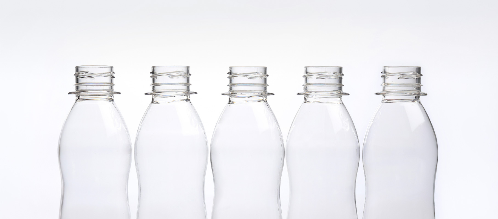

SANC ESG
건강한 미래를 위한 SANC의 약속
자연과 함께하는
SANC 이야기
SANC에는 약 11개의 저수지가 조성되어 있습니다.
이 저수지들은 단순히 물을 저장하는 공간을 넘어,
자연과의 공존을 꿈꾸는 SANC의 철학을
담고 있습니다.

식품단지 내의 호수와 곳곳의 저수지는
자연 생태계를 복원하고 생물 다양성을 지키기 위해 설계되었습니다.
물안개가 피어오르는 호수는 단지 내 미기후를
조절해 쾌적한 환경을 제공하며, 저수지 주변의 푸른 숲과
조화롭게 어우러져 한 폭의 그림 같은 풍경을 선사합니다.
SANC의 저수지와 호수는 지역 주민과 직원들에게
휴식과 힐링의 공간으로 사랑받고 있습니다.
또한, 자연과 함께 호흡하며 지속 가능한 미래를 만들어가는 SANC의
이야기를 담은 상징적인 장소로 자리 잡고 있습니다.
자연과 사람, 그리고 기업이 함께 어우러지는
SANC의 모습은 환경을 존중하고 미래를 준비하는
ESG 철학의 실천 그 자체입니다.
자연과 공존하는
지속 가능한 공간
- 환경보전
- 사회적 가치 창출
- 지속 가능 경영
- 교육 및 홍보
-
ECO-PRESERVATION
호수와 저수지는 자연 생태계 복원에 기여하며 지역 생물 다양성을 증진합니다. 단지 내 미기후를 조절하고 물 순환을 통해 지속 가능한 환경을 조성하며, 주민들에게 휴식과 교육의 장을 제공해 자연과의 공존을 체험할 기회를 만듭니다.
-
SOCIAL VALUE
직원과 지역 주민들에게 휴식과 여가를 즐길 수 있는 친환경 공간을 제공합니다. 이 공간은 스트레스 해소와 건강 증진에 도움을 주며, 지속 가능한 발전을 위한 역할도 합니다. 또한, 지역 커뮤니티와의 소통을 위한 친화적인 환경을 조성해 주민 간 교류와 협력을 촉진합니다.
-
ECO-MANAGEMENT
ESG 경영 철학에 따라 설계된 공간으로, 기업의 책임 경영을 실천합니다. 자원의 효율적 활용과 친환경 인프라 구축을 통해 미해 세대를 위한 지속 가능성을 확보합니다. 더불어 지역 사회와의 협력을 강화하여 모두가 함께 성장하는 환경을 조성합니다.
-
educate & promote
환경 보호와 지속 가능성의 중요성을 알리는 교육 및 체험 프로그램 운영 가능하며 ESG 가치를 널리 알릴 수 있는 대표 사례로 활용이 될 수 있습니다. 더불어 지역 사회와 기업이 함께 참여하는 협력 모델로 확장 가능합니다.

ECO-PRESERVATION
호수와 저수지는 자연 생태계 복원에 기여하며 지역 생물 다양성을 증진합니다. 단지 내 미기후를 조절하고 물 순환을 통해 지속 가능한 환경을 조성하며, 주민들에게 휴식과 교육의 장을 제공해 자연과의 공존을 체험할 기회를 만듭니다.

SOCIAL VALUE
직원과 지역 주민들에게 휴식과 여가를 즐길 수 있는 친환경 공간을 제공합니다. 이 공간은 스트레스 해소와 건강 증진에 도움을 주며, 지속 가능한 발전을 위한 역할도 합니다. 또한, 지역 커뮤니티와의 소통을 위한 친화적인 환경을 조성해 주민 간 교류와 협력을 촉진합니다.

ECO-MANAGEMENT
ESG 경영 철학에 따라 설계된 공간으로, 기업의 책임 경영을 실천합니다. 자원의 효율적 활용과 친환경 인프라 구축을 통해 미해 세대를 위한 지속 가능성을 확보합니다. 더불어 지역 사회와의 협력을 강화하여 모두가 함께 성장하는 환경을 조성합니다.

educate & promote
환경 보호와 지속 가능성의 중요성을 알리는 교육 및 체험 프로그램 운영 가능하며 ESG 가치를 널리 알릴 수 있는 대표 사례로 활용이 될 수 있습니다. 더불어 지역 사회와 기업이 함께 참여하는 협력 모델로 확장 가능합니다.
우리 지구를 위한
SANC의 노력과
미래의
환경을 위한 실천
-
Yoghurt RUN 투명 페트
신앙촌식품, 탄소 절감을 위한 작은 혁신에서 ESG 경영으로
신앙촌식품(주) 음료공장은 제품 생산의 시작부터 끝까지 환경을 생각합니다. 그 핵심에는 PET병의 직접 생산이 있습니다. 대부분의 기업은 PET병을 외부에서 구매하고 운송하지만, 신앙촌식품은 자체 생산을 통해 외부 구매비용과 물류비용을 줄이며 원가 경쟁력을 강화하고 있습니다.
그러나 여기서 멈추지 않습니다. PET병의 직접 생산은 단순히 비용 절감에서 끝나는 것이 아니라, 물류 운송 과정에서 발생하는 탄소 배출을 획기적으로 줄이는 환경 보호 활동으로 이어집니다. PET병을 운송하지 않음으로써 연간 수많은 운송 차량에서 배출되는 이산화탄소를 없애고, 이는 곧 지속 가능한 경영으로 연결됩니다.
이처럼 신앙촌식품은 친환경 경영을 통해 기업의 사회적 책임을 실천하며, "지구를 위한 작은 변화가 큰 차이를 만든다"는 믿음으로 ESG 경영을 실현하고 있습니다. 앞으로도 환경과 미래를 생각하는 노력을 이어갈 것입니다.
-
Yoghurt RUN 투명 페트
신앙촌식품, 탄소 절감을 위한 작은 혁신에서 ESG 경영으로
신앙촌식품(주) 음료공장은 제품 생산의 시작부터 끝까지 환경을 생각합니다. 그 핵심에는 PET병의 직접 생산이 있습니다. 대부분의 기업은 PET병을 외부에서 구매하고 운송하지만, 신앙촌식품은 자체 생산을 통해 외부 구매비용과 물류비용을 줄이며 원가 경쟁력을 강화하고 있습니다.
그러나 여기서 멈추지 않습니다. PET병의 직접 생산은 단순히 비용 절감에서 끝나는 것이 아니라, 물류 운송 과정에서 발생하는 탄소 배출을 획기적으로 줄이는 환경 보호 활동으로 이어집니다. PET병을 운송하지 않음으로써 연간 수많은 운송 차량에서 배출되는 이산화탄소를 없애고, 이는 곧 지속 가능한 경영으로 연결됩니다.
이처럼 신앙촌식품은 친환경 경영을 통해 기업의 사회적 책임을 실천하며, "지구를 위한 작은 변화가 큰 차이를 만든다"는 믿음으로 ESG 경영을 실현하고 있습니다. 앞으로도 환경과 미래를 생각하는 노력을 이어갈 것입니다.
SANC, 탄소 없는 생산으로
환경을 지키는 기업
절감 )
나눔으로서 더 행복해지는 사회,
우리 사회와 구성원을 위한 가치있는 나눔
오랜 기간 나눔을 실천해온 사회적 기업